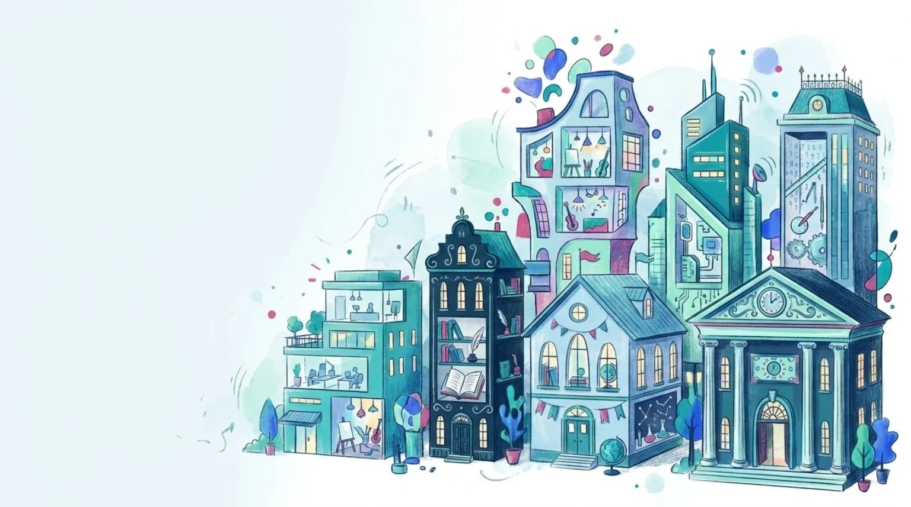
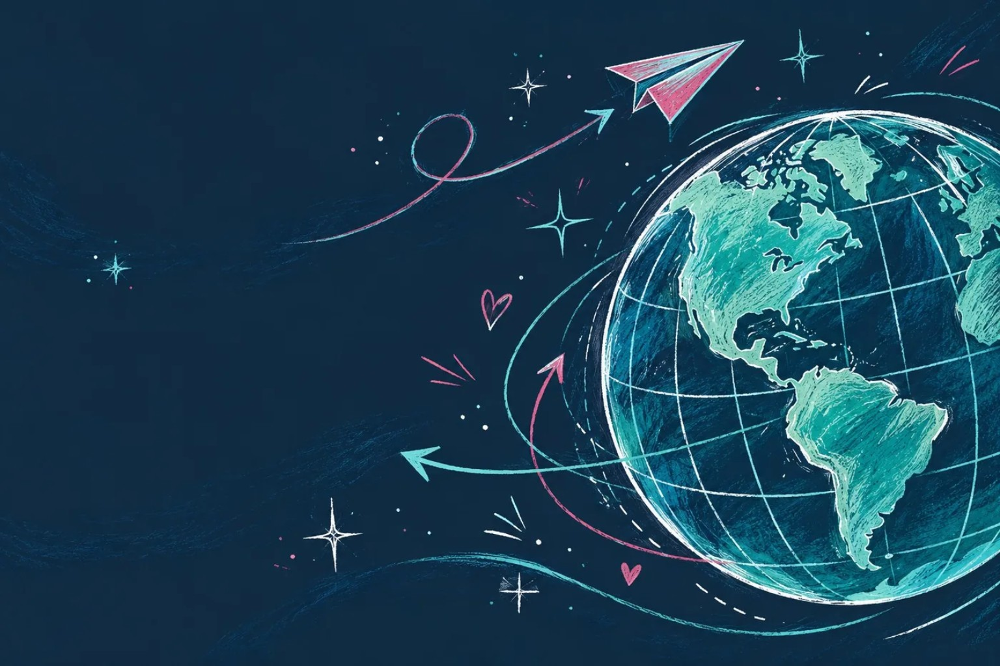

Automotive, Mobility & Transportation
Ford · Mazda · Nissan · Bridgestone · Harley-Davidson · Polaris
Professional experience
A diverse range of industries. A consistent attention to language.
Throughout my career, I have contributed to English–Canadian French language projects involving organizations and brands across a broad range of industries.
This experience has exposed me to diverse audiences, subject matters, communication styles and terminology — from specialized technical and corporate content to consumer-facing communications and digital experiences.
The organizations and brands below reflect the breadth of industries represented in my professional assignments.

Ford · Mazda · Nissan · Bridgestone · Harley-Davidson · Polaris
Visa · Nasdaq · CIBC · Sun Life · State Street · Natixis · U.S. Bank
Microsoft · Google · Sony · Walt Disney · Electronic Arts · Lenovo · HP · Bell Media
Public Services and Procurement Canada · Transport Canada · National Defence and the Canadian Armed Forces
Deloitte · Ernst & Young · Baker & McKenzie · CMC Microsystems · HSO · DST Consulting Engineers · Gage Marketing Group
3M · Hitachi · Cummins · Henkel · Sherwin-Williams · Teledyne · Gates Corporation
adidas · IKEA · Pepsi · Unilever · Kraft Heinz · Sobeys · Stella Artois
NFL · McDonald’s · Blue Diamond Resorts
Pfizer · Johnson & Johnson · Merck · GE HealthCare · Baxter · Accreditation Canada

Language Services Partner
My primary language services partner.
TransPerfect has been my primary language services partner since the beginning of my career in the field. This long-standing professional relationship has been an important part of my experience in the language services industry.
A note on professional relationships
The organizations and brands featured on this page are associated with language assignments I have worked on throughout my career. Depending on the mandate, projects may have been delivered through language services providers, agencies or other professional intermediaries.